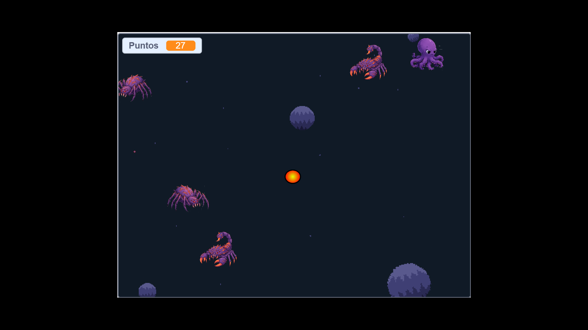
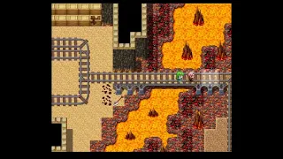
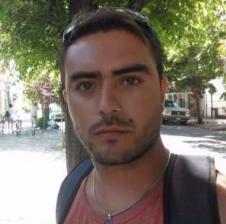

STAR // VOID
SCRATCH · VIDEOJUEGO
Uno de mis primeros acercamientos al desarrollo de videojuegos. Un proyecto realizado en Scratch como parte de la cursada.
PORTFOLIO DE DESARROLLO DE VIDEOJUEGOS
Un recorrido por mis primeros proyectos, experimentos y aprendizajes en el desarrollo de videojuegos.
VER PROYECTOS ↘01 / SELECCIÓN DE PROYECTOS
Tres proyectos desarrollados durante mi recorrido de formación. Cada uno representa una etapa y una herramienta diferente.

SCRATCH · VIDEOJUEGO
Uno de mis primeros acercamientos al desarrollo de videojuegos. Un proyecto realizado en Scratch como parte de la cursada.

RPG MAKER MV · RPG POR TURNOS
El videojuego propone explorar una mazmorra dividida en tres escenarios. En cada nivel aparecen encuentros aleatorios con enemigos y un jefe que debe ser derrotado para desbloquear el siguiente piso y escapar de la mina.
El protagonista, João, cuenta con un ataque básico y una habilidad de fuego. En el segundo escenario se incorpora Ketzaly, que aporta apoyo al equipo mediante un ataque básico y una habilidad de curación.
GODOT ENGINE 4 · C# · 3D
Videojuego 3D de plataformas desarrollado en colaboración con un compañero. El jugador debe explorar escenarios flotantes, superar obstáculos, recolectar monedas y alcanzar el tesoro final. Incluye dos niveles, plataformas móviles, sistema de recolección y pantalla de victoria.
02 / EQUIPAMIENTO
Herramientas y tecnologías utilizadas en estos proyectos.
03 / PERFIL DEL JUGADOR

PLAYER PROFILE
Tengo 36 años y en 2026 comencé la Licenciatura en Producción y Desarrollo de Videojuegos en la Universidad Nacional de José C. Paz (UNPAZ).
Después de una trayectoria en el ámbito administrativo, decidí orientar mi formación hacia la tecnología y el desarrollo de videojuegos. Actualmente estoy aprendiendo programación, explorando distintos motores y herramientas, y desarrollando mis primeros proyectos interactivos.
Este portfolio reúne tres videojuegos realizados durante mi primer cuatrimestre de formación, cada uno con sus propios desafíos, herramientas y aprendizajes.
CURRENT LEVEL: LEARNING / BUILDING / REPEATING
04 / FIN DE LA TRANSMISIÓN
Gracias por visitar mi portfolio.
[ https://github.com/Rauszack / https://rauszack.itch.io/ ]